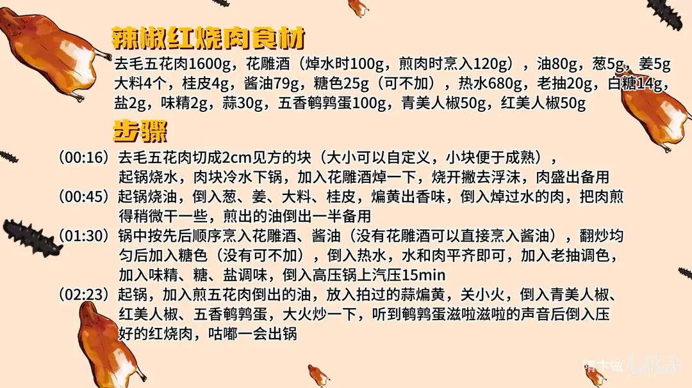

辣椒红烧肉
隋卞一做。1600g 去毛五花肉切 2cm 见方，冷水下锅焯净浮沫；葱姜大料桂皮煸香后下肉煎出油，依次烹花雕酒、酱油，加热水 680g，高压锅上汽压 15 分钟，再用蒜、青红美人椒和鹌鹑蛋回锅咕嘟。
原视频：https://www.bilibili.com/video/BV1US421R7sq
食材
去毛五花肉、花雕酒 等 18 样
| 类别 | 用料 | 用量 |
|---|---|---|
| 主料 | 去毛五花肉 | 1600g |
| 调料 | 花雕酒 | 100g（焯水时）、120g（煎肉时烹入） |
| 煎肉 | 油 | 80g |
| 香料 | 葱 | 5g |
| 香料 | 姜 | 5g |
| 香料 | 大料 | 4 个 |
| 香料 | 桂皮 | 4g |
| 调料 | 酱油 | 79g |
| 调料 | 糖色 | 25g（可不加） |
| 调料 | 热水 | 680g |
| 调料 | 老抽 | 20g |
| 调料 | 白糖 | 14g |
| 调料 | 盐 | 2g |
| 调料 | 味精 | 2g |
| 回锅 | 蒜 | 30g |
| 回锅 | 五香鹌鹑蛋 | 100g |
| 回锅 | 青美人椒 | 50g |
| 回锅 | 红美人椒 | 50g |
步骤
- 切块焯水：去毛五花肉切成 2cm 见方的块，大小可以自定义，小块便于成熟；起锅烧水，肉块冷水下锅，加入 100g 花雕酒焯一下，烧开撇去浮沫，肉盛出备用。
- 煸香料煎肉：起锅烧 80g 油，倒入 5g 葱、5g 姜、4 个大料、4g 桂皮，煸黄出香味；倒入焯过水的肉，把肉煎得稍微干一些，煎出的油倒出一半备用。
- 调味压肉：锅中按先后顺序烹入 120g 花雕酒、79g 酱油（没有花雕酒可以直接烹入酱油），翻炒均匀后加入 25g 糖色（没有可不加），倒入 680g 热水，水和肉平齐即可；加入 20g 老抽调色，加入 2g 味精、14g 白糖、2g 盐调味，倒入高压锅，上汽压 15 分钟。
- 回锅出锅：起锅，加入煎五花肉倒出的油，放入 30g 拍过的蒜煸黄，关小火，倒入 50g 青美人椒、50g 红美人椒、100g 五香鹌鹑蛋，大火炒一下；听到鹌鹑蛋滋啦滋啦的声音后倒入压好的红烧肉，咕嘟一会出锅。
小贴士
- 煎肉出的油留一半回锅，辣椒和鹌鹑蛋吸这份油才香。
- 水加到与肉平齐即可，水多味淡，压好后不收汁。
- 没有糖色可不加，用 20g 老抽补色。
讲解要点
难度：★★★☆☆（难点是煎肉火候和高压锅时间，肉煎不透就吸不住汤）
为什么这么做
- 切 2cm 见方、块小一点：块小受热快、熟得快，也更容易压透、吸进味道。
- 冷水下锅焯、加花雕酒：水温慢慢升高，肉里的血才凝成沫子浮上来，能打干净；开水下锅血水一烫就锁在肉里了。
- 沫子必须打掉：不打掉会重新沾回肉上，成品发腥，汤也浑。
- 先用香料把油煸香，再下肉：葱姜大料桂皮炸到变黄，油里吸满香料味，用这锅油煸肉等于边煎边入味。
- 肉要煎干、煎出油：表面煎出一层近似胶壳的东西，后面才能把汤汁吸足；没煎透的肉吃起来像水煮。
- 先烹酒、后烹酱油：酒先下能去异味、留酒香，酱油后下才渗得进肉里；顺序倒了香气就跑了。
- 水与肉平齐：这道菜压好后不收汁，水多味就淡；糖色没有就靠老抽找色，也够用。
容易翻车
- 沫子不打干净，成品发腥。
- 肉没煎干就加水，出不来胶壳，肉质发水、不吸汤。
- 酒和酱油一次全倒，去腥和酱香都不到位。
- 水加多了又不收汁，味道被稀释，肉发淡。
- 鹌鹑蛋跟着肉一起进高压锅，会压散、芯变硬，没了沙沙的口感。
原片尾卡

原片文案
AI 字幕校准稿
超级下饭的辣椒红烧肉。去个毛的五花肉，切成 2cm 见方的块，大小可以随意，切小一点就熟得快一点。
起锅烧水，冷水下锅，加入花雕酒。随着水温慢慢升高，肉里边的血会快速凝结出沫子，然后要打掉。沫子要是不打掉，都会跑到肉上面去。
把锅烧热，里边加入底油，放入葱姜、大料、桂皮煸香。看葱姜变黄了就出香味了，这样炸料的同时，把这油也炸香了。炸香之后把焯过水的肉倒进去，用这个炸过香料的油来煸肉。你听这声滋啦滋啦的，就等于那一面开始冒油了，冒一会儿你再扒拉一下。
把它煎得干一点，一会儿更容易吸收汤汁的味道。你看现在锅里边开始冒油泡泡了，肥肉里面的油开始往外渗，煎出的油可以撇出一点。
再次烹入花雕酒、酱油，这都是有先后顺序的。先烹一部分花雕酒，可以去掉异味，存留一部分酒香；再烹入酱油，让酱油的味儿渗入肉里面去。如果家里没有花雕酒，就直接烹酱油，酱油也能去腥增香。你替大伙闻一闻，几乎一点腥味都没有——不是几乎，就是一点腥味都没有。
这会儿里边加点糖色，加水，热水，水跟肉平了就行。老抽找一下色，放味精、盐，尝尝底味。然后放进高压锅里边，时间到了关火。
做到这一步还不算完。锅里边放入煸五花肉的那油，放入大蒜，注意这锅里边放的是拍蒜，这样更好出味。煸黄，关小火，放入青红美人椒，放入鹌鹑蛋。这个鹌鹑蛋我选的是五香的，不用下油锅去炸，它里边有底味；煎一下是让它吸收点蒜和辣椒的味道。只要听见滋啦滋啦的声音就可以了。
我们把肉倒进去，咕嘟一下，让肉汤里边的辣椒和蒜的味道融合一下。好了，出锅。
还得是红烧肉啊。肉煎到火候了，表面会有一个小小的、类似于胶壳一样的东西，把汤汁的味道吸得特别足，蒜末还特别香。它不是那种特别辣的风格，青椒只是点缀了一点点清香。尝尝鹌鹑蛋，里边芯儿都变得特别软，里面是那种沙沙的。所以这个鹌鹑蛋不能跟肉一块炖，把肉炖好了之后，搁锅里稍微一煎一咕嘟就行了。好吃。